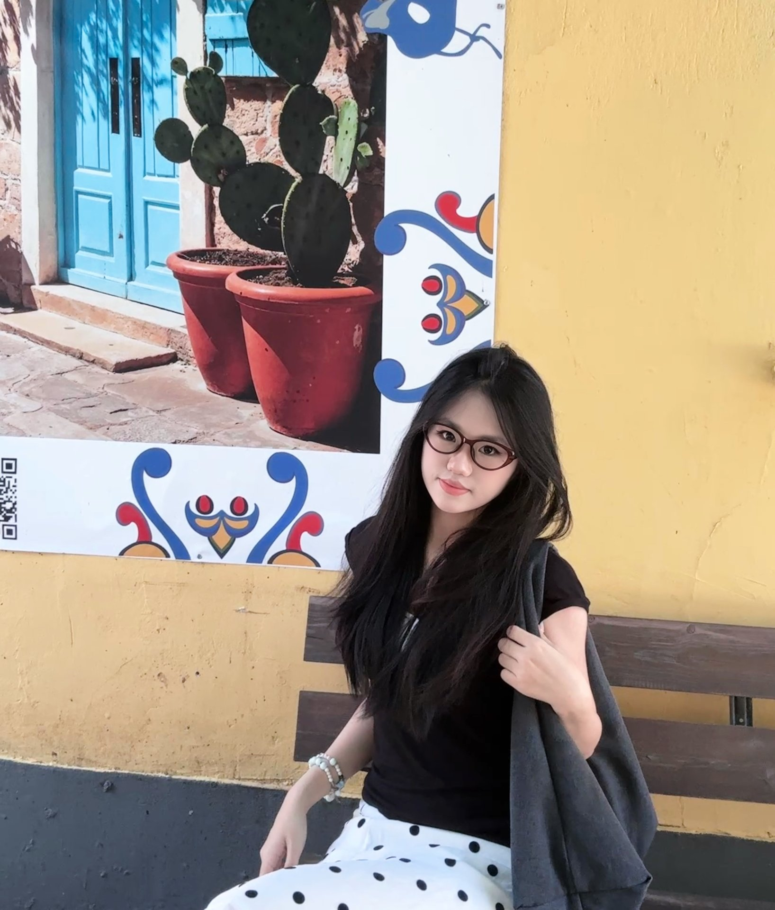

我是林凤婷
福州大学城乡规划专业本科生，具备系统的调研方法论与量化分析能力。 我相信“调研诊断 → 量化分析 → 方案落地”的方法论，可以解决商业世界里的真实问题。 目前正在寻找运营 / 产品方向的实习机会。

往下滑，看看我做过什么
About · 关于
我是一名城乡规划专业的本科生，就读于福州大学（211），将于 2027 年 6 月毕业。 在专业训练中，我系统掌握了 调研框架搭建、量化数据分析、问题-需求-方案闭环 的核心方法。2026 年暑期，我在一家跨境电商公司完成了为期 3 个月的亚马逊运营实习， 将这套方法论成功迁移到电商运营场景中——从 Listing 维护、广告执行到客诉处理， 用数据和同理心解决真实业务问题。
我擅长在复杂信息中快速定位核心问题，用 结构化思维 拆解任务，再用 量化手段 验证假设、推动落地。无论是 200 份问卷的学术调研，还是数十条 ASIN 的批量维护， 我都坚持“目标清晰、过程可控、结果可衡量”的工作方式。我相信数据不会说谎，用户的声音值得被认真倾听。
用规划思维拆解复杂问题，用数据本能驱动业务增长。
Hobby Diary · 爱好手帐
✎ 这是我的手帐本 —— 翻一翻，看看工作之外的我。
城市漫步
追星
探店
旅行
阅读
Skills · 技能
🛠️ 我的工具箱 —— 每一项都曾在真实场景中落地过。
数据分析
平台运营
调研方法
客户沟通
项目管理
库存与广告
通用工具
Projects · 项目
听障群体城市公共空间包容性社会调查
针对听障人士出行沟通障碍缺乏量化支撑的问题，通过 200 份问卷 + 10 份深度访谈， 定位核心痛点，输出三大维度优化策略，获课程最高分。
个人投资日志 · Vibe Coding
用自然语言驱动 AI 工具（Cursor）快速搭建个人投资记录与复盘网页， 实现资产动态看板、交易记录管理、收益可视化分析，让投资决策有据可查。
Vibe Coding 个人作品网页
将个人简历升级为沉浸式交互网页，用“规划思维”组织信息架构， 实现经历、技能、项目的模块化展示，支持移动端自适应。
Education · 教育
主修方向：城市社会学、城市经济学、居住区规划、控规与城市设计。 辅修技能：Python 数据分析、调研框架搭建。